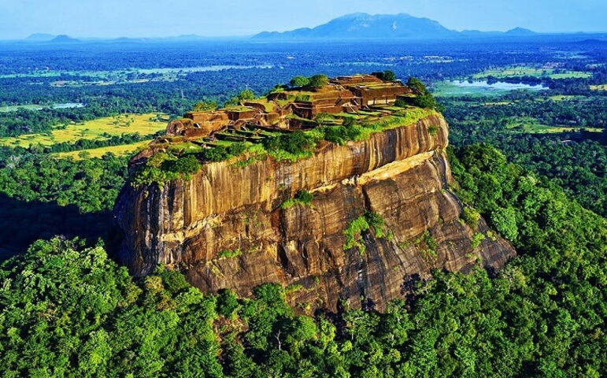
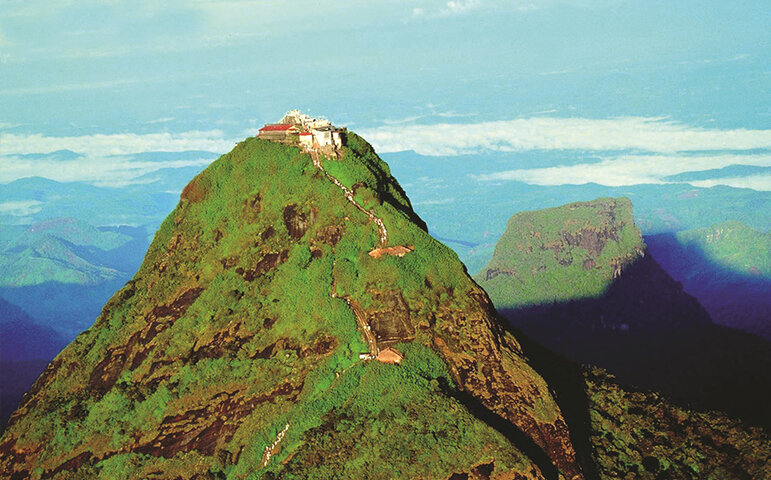
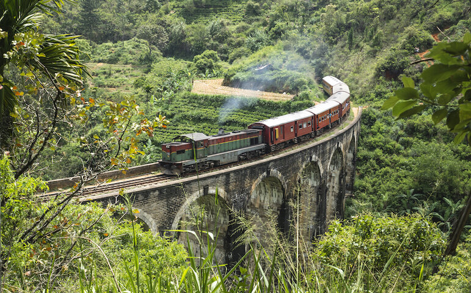
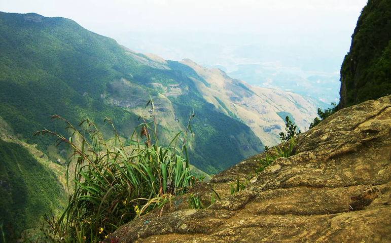
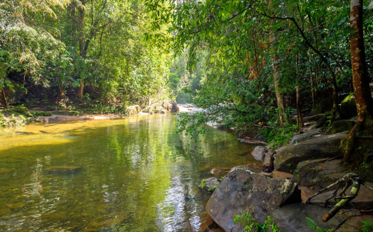
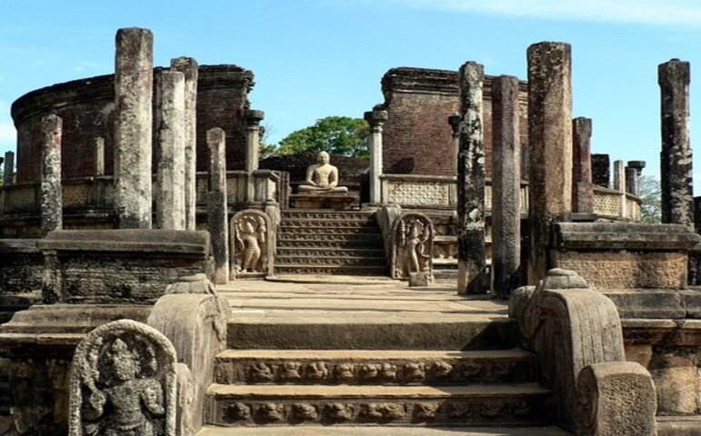
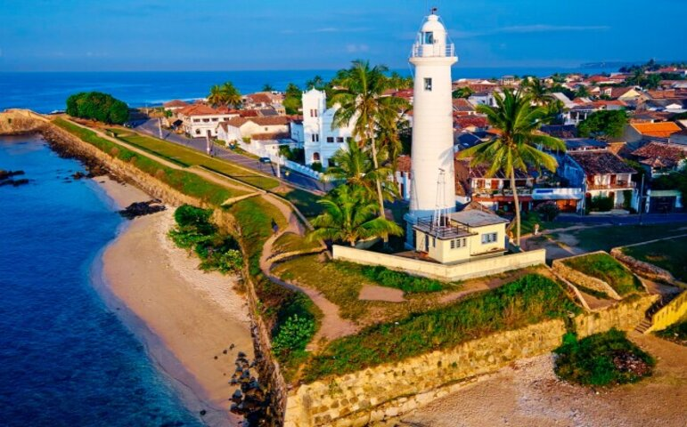
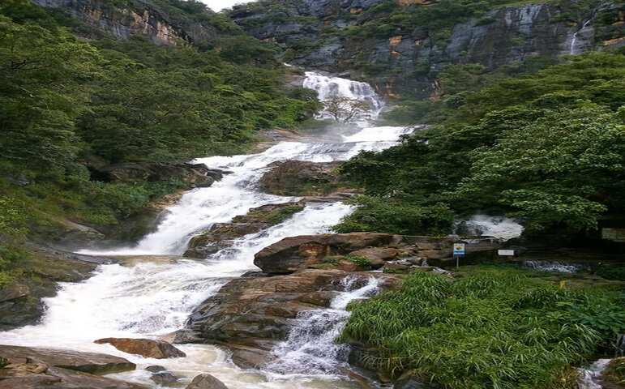

SIGIRIYA
Sigiriya is an ancient fortress and palace complex located in central Sri Lanka. It is considered to be one of the most significant historical and archaeological sites in the country, and attracts thousands of visitors each year. The site is also known as the Lion Rock, due to the giant lion statue that once guarded the entrance to the palace.
Sigiriya was built by King Kashyapa I in the 5th century AD. According to historical records, the king constructed the fortress as a new capital city after he seized power from his father, King Dhatusena. Kashyapa was not the rightful heir to the throne, as his older brother, Mogallana, was next in line. Fearing that Mogallana would seek revenge, Kashyapa moved the capital to Sigiriya and built the fortress as a means of protection.
The fortress was built on top of a massive rock outcrop, which rises 200 meters above the surrounding landscape. The location was strategically chosen for its natural defenses, as the steep rock walls made it nearly impossible for enemies to attack. The fortress was also surrounded by a moat, which provided an additional layer of protection.
In addition to its defensive features, Sigiriya was also designed as a palace complex for King Kashyapa. The palace was built at the summit of the rock, and was decorated with elaborate frescoes, gardens, and pools. The palace also had a complex water system that supplied water from a nearby reservoir, allowing the king and his court to live comfortably in the midst of the dry Sri Lankan climate.
The highlight of the palace complex is the Mirror Wall, a smooth, polished wall that once reflected the frescoes on the opposite wall. The Mirror Wall is considered to be one of the most remarkable features of the site, as it has managed to retain its reflective properties for over a thousand years.
One of the most striking features of Sigiriya is the giant lion statue that once guarded the entrance to the palace. The statue was built out of brick and plaster, and was over 12 meters tall. Unfortunately, the statue has been mostly destroyed over time, and only the paws and a small portion of the head remain today.
The site plan at Sigiriya is regarded as being extremely elaborate and innovative, making it one of the most significant urban planning sites of the first millennium. The layout combines symmetry and asymmetry ideas to purposefully intertwine the surrounding natural and man-made geometric forms. A park for the royals is located on the western side of the rock, and it is symmetrically set out. The park includes sophisticated surface/subsurface hydraulic systems as well as water-retaining structures, some of which are still functional today. A man-made reservoir can be found in the south; it was heavily utilized by the old dry zone capital of Sri Lanka. There were five gates at the entrances. It is believed that the royals were only allowed to enter through the more ornate western gate.

Adam's peak
Sri Pada, also known as Adam's Peak, is a sacred mountain located in the central highlands of Sri Lanka. It is a revered pilgrimage site for four major religions, namely Buddhism, Hinduism, Islam, and Christianity. Sri Pada stands at a height of 2,243 meters above sea level and is considered the fourth highest peak in Sri Lanka.
The history of Sri Pada dates back to more than 2,000 years. It is believed that the Lord Buddha visited Sri Lanka and left a footprint on the peak. This footprint is considered sacred by the Buddhist community and is believed to be a symbol of Lord Buddha's presence on the island. The footprint is about 1.8 meters long and is located at the top of the peak. The Hindu community, on the other hand, believes that the footprint belongs to Lord Shiva.
The pilgrimage season to Sri Pada typically starts in December and ends in May. During this time, thousands of pilgrims from all over the world make the arduous climb to the summit to pay homage to the sacred footprint. The climb involves climbing over 5,000 steps, and it can take anywhere from four to ten hours to reach the top, depending on one's fitness level.
In his Travels from 1298 CE, the Italian traveler Marco Polo observed that Adam's Peak was a significant site of pilgrimage, but he made no mention of a footprint in the rock.
In 1344 CE, the Arab explorer Ibn Battuta scaled the peak of the mountain he named Sarandb. He describes a staircase and iron railings with chains to support the pilgrims. [10] [11] [12] Lieutenant William Malcolm of the 1st Ceylon Regiment made the first ascent of the summit by an Englishman on April 26, 1815, from the Ratnapura side. His report of the ascent was published in the Government Gazette on May 10, 1815. [13] In 1817, Sir Humphry Davy's famous chemist brother John Davy paid a visit to the top.He remembered seeing a large foot print engraved in stone that was embellished with a single brass border and diamonds.

Nine Arch Bridge
The Nine Arch Bridge, often referred to as the Demodara Bridge or the Bridge in the Sky, is an amazing feat of engineering that is situated in Sri Lanka. The bridge connects the towns of Ella and Demodara in the scenic central highlands of Sri Lanka. It is a well-liked tourist spot and one of the most photographed sites in the nation.
During Sri Lanka's time as a British colony, the Nine Arch Bridge was built. Without employing any steel or iron reinforcing, the bridge was constructed entirely out of stone, brick, and cement. The bridge was built in 1921, and nearly a century later, it is still in good condition. The design of the Nine Arch Bridge is one of its most outstanding features. The bridge's name comes from its nine arches. The bricks that make up the arches have been meticulously positioned and aligned to form a perfect arc. The arches' various heights and widths combine to form a lovely, harmonious structure. The 91-meter-long bridge has a height of 24 meters and is supported by numerous hard stone pillars.
The construction of the bridge is generally attributed to a local Ceylonese builder, P. K. Appuhami, in consultation with British engineers. The chief designer and project manager of the 'upcountry railway line of Ceylon' project was D. J. Wimalasurendra, a distinguished Ceylonese engineer and inventor. The designer of the viaduct was Harold Cuthbert Marwood of Railway Construction Department of Ceylon Government Railway. The 1923 report titled "Construction of a Concrete Railway Viaduct in Ceylon" published by the Engineering Association of Ceylon has details of all the records including the plans and drawings. Popular rumours suggest that when construction work commenced on the bridge, the Great War began between the empires of Europe and the steel assigned for this site was reallocated to Britain's War related projects at the battlefront. As a result, the work came to a standstill, leading the locals to build the bridge with stone bricks and cement, but without steel.

World's End
World's End in Nuwara Eliya, Sri Lanka, is one of the most spectacular natural landmarks in the country. This stunning cliff face is located at the southern end of Horton Plains National Park and offers a breathtaking view of the surrounding landscape. In this essay, we will explore the history and significance of World's End in Sri Lanka.
World's End is a 1,200-meter cliff face that drops off into a 400-meter deep chasm. The viewpoint at World's End is located at the edge of this cliff and offers a stunning panoramic view of the surrounding countryside. The view is particularly spectacular in the early morning when the mist is still rising from the valley below, creating a stunningly eerie atmosphere. All you can expect to see from World’s End after around 9am is a swirling white wall. The early morning (between 6am and 10am) is the best time to visit, before the clouds roll in. That’s when you’ll spy toy-town, tea-plantation villages in the valley below, and an unencumbered view south towards the coast.
The history of World's End dates back to the early 19th century when the British discovered the plateau on which it is located. The plateau, which was previously used by the indigenous people of Sri Lanka for grazing, was transformed by the British into a tea plantation. The area around World's End was initially used for livestock grazing, but in the early 1900s, it was turned into a nature reserve to protect the unique flora and fauna of the area.

Sinharaja Forest Reserve
Sinharaja Forest Reserve is one of the most ecologically diverse and important areas in Sri Lanka. Located in the southwestern part of the island, the forest is spread across the districts of Galle, Matara, and Ratnapura. The reserve spans over 11,187 hectares and is a UNESCO World Heritage Site, recognized for its exceptional biodiversity and unique ecosystem.
The name 'Sinharaja' means 'Lion King', and the reserve is believed to have been home to a large number of leopards and other wildlife in the past. Today, it is renowned for its rich vegetation, which includes over 60% of the country's endemic plant species, as well as numerous rare and endangered animal species.
Sinharaja Forest Reserve is also recognized for its importance as a catchment area, providing water for rivers and streams that are essential for irrigation, drinking, and hydroelectric power generation. It acts as a natural barrier to the winds and monsoons that sweep across the island, regulating the climate in the region. The forest is characterized by its dense vegetation, which includes tall trees, lianas, and epiphytes. It is home to over 50% of Sri Lanka's endemic fauna species, such as the Sri Lankan Blue Magpie, the Red-faced Malkoha, the Purple-faced Langur, and the Sri Lankan Leopard.
The hilly virgin rainforest, part of the Sri Lanka lowland rain forests ecoregion, was saved from the worst of commercial logging by its inaccessibility, and was designated a World Biosphere Reserve in 1978 and a World Heritage Site in 1988. Because of the dense vegetation, wildlife is not as easily seen as at dry-zone national parks such as Yala. There are about 3 elephants, and 15 or so[vague] leopards. The most common larger mammal is the endemic purple-faced langur.

Ruwanwelisaya
Ruwanwelisaya is a magnificent stupa located in the ancient city of Anuradhapura, Sri Lanka. The stupa was built during the reign of King Dutugemunu in the 2nd century BC and is considered one of the most important and sacred Buddhist sites in Sri Lanka.
The construction of Ruwanwelisaya was a monumental achievement at the time, and it is estimated that over 90 million bricks were used in its construction. The stupa has a diameter of 138 feet (42 meters) at its base and a height of 338 feet (103 meters), making it one of the tallest structures in ancient Sri Lanka.
According to legend, King Dutugemunu built the stupa to enshrine relics of the Buddha, which he acquired from King Asoka of India. The stupa was also intended to promote Buddhism and to serve as a symbol of unity among the people of Sri Lanka.
Ruwanwelisaya has undergone several renovations over the centuries, including a major restoration in the 20th century. The stupa now stands as a testament to the rich history and culture of Sri Lanka, attracting thousands of visitors every year.
One of the unique features of Ruwanwelisaya is the large number of small Buddha statues that surround the base of the stupa. These statues were added during various renovations and are believed to have been donated by devotees as a form of merit-making.
Another notable feature of Ruwanwelisaya is the large granite slab that forms the stupa's base. This slab is adorned with intricate carvings depicting various scenes from Buddhist mythology, including the Jataka tales and the life of the Buddha.
The stupa is also surrounded by a beautiful garden, which adds to the serene and peaceful atmosphere of the site. Visitors can stroll through the garden and take in the stunning views of the stupa from different angles.

Polonnaruwa
Polonnaruwa is a city located in the North Central Province of Sri Lanka. It was the second capital of Sri Lanka after Anuradhapura, and it served as the center of political, economic, and cultural activities during the 11th and 12th centuries. The city is known for its well-preserved ancient ruins, which include temples, palaces, and other structures that provide insight into the rich history and culture of Sri Lanka.
One of the most prominent features of Polonnaruwa is its ancient ruins, which are located within the Polonnaruwa Archaeological Park. The park is home to many temples and other structures that were built during the reign of King Parakramabahu I, who is credited with turning Polonnaruwa into a prosperous and vibrant city. Some of the notable structures within the park include the Royal Palace, the Quadrangle, and the Gal Vihara, which is a set of four Buddha statues carved into granite.
The Royal Palace is one of the largest structures within the park, and it is believed to have been the residence of the king and his court. The palace features multiple levels and rooms, and its architecture is a testament to the skill and ingenuity of the builders who constructed it. The Quadrangle, which is located near the palace, is another impressive structure that consists of several buildings and temples that were used for religious and administrative purposes. The Gal Vihara, which is located a short distance from the palace and the Quadrangle, is perhaps the most iconic feature of Polonnaruwa. The four statues, which were carved into a single piece of granite, depict the Buddha in various poses, including standing, sitting, and reclining. The statues are considered to be some of the finest examples of ancient Sri Lankan art, and they attract thousands of visitors each year.

Galle Fort
Galle Fort is a remarkable and historic structure located in the city of Galle, Sri Lanka. Built by the Portuguese in the 16th century, this fortified city is a UNESCO World Heritage Site and an important landmark of Sri Lanka's cultural and architectural heritage. The fort has witnessed many significant historical events, and its history is closely intertwined with the colonial past of Sri Lanka. The construction of Galle Fort began in 1588 when the Portuguese arrived in Sri Lanka. The fort was initially built to defend the city of Galle against foreign invasions and to establish a secure base for the Portuguese navy. Over the years, the fort was expanded and fortified with walls, ramparts, and bastions, making it an imposing structure that is still standing to this day.
During the Dutch occupation of Sri Lanka in the 17th century, Galle Fort was extensively renovated and fortified, with the addition of several important buildings, such as the Dutch Reformed Church, the Governor's residence, and the Court of Justice. The Dutch also established a thriving trading hub within the fort, which brought great prosperity to the region. In the 18th century, the British took control of Sri Lanka, and Galle Fort continued to serve as an important military outpost. The fort was used as a strategic base for the British Navy during the Napoleonic Wars, and later, as a quarantine station for ships arriving from India and other countries.
Today, Galle Fort is a thriving tourist destination and a vibrant cultural center. The fort is home to numerous art galleries, museums, cafes, and boutiques, making it a popular spot for tourists.

Ravana Falls
Ravana Falls is a stunning waterfall located in Sri Lanka's Central Province, near the town of Ella. The waterfall is named after the demon king Ravana, who is a central character in the Hindu epic, Ramayana. The falls are considered one of the most popular tourist attractions in Sri Lanka due to their natural beauty and cultural significance. The Ravana Falls is a majestic, multi-tiered waterfall that cascades down a height of over 25 meters. The water falls into a natural pool, where visitors can take a refreshing swim and enjoy the serene surroundings. The lush green forest that surrounds the waterfall provides a breathtaking backdrop, making it a perfect spot for photography and relaxation.
According to local legends, the waterfall is named after Ravana, who is said to have lived in Sri Lanka thousands of years ago. Ravana was a powerful demon king who had ten heads and was considered to be one of the most intelligent beings in the world. He was also known for his extraordinary physical strength and was feared by many. Ravana was eventually defeated by Lord Rama, who is considered to be the seventh avatar of the Hindu god Vishnu. Despite his evil nature, Ravana is revered by many Sri Lankans as a symbol of strength and intelligence. The Ravana Falls is just one of the many places in Sri Lanka that is associated with the demon king. The town of Ella, where the waterfall is located, is also said to be the place where Ravana kept the beautiful princess Sita captive.
Today, the Ravana Falls is a popular tourist destination, attracting visitors from all over the world. The area around the waterfall has been developed with facilities such as cafes, souvenir shops, and restrooms to accommodate the influx of tourists. The local authorities have also taken steps to preserve the natural beauty of the waterfall by implementing strict regulations on waste disposal and other environmental concerns.